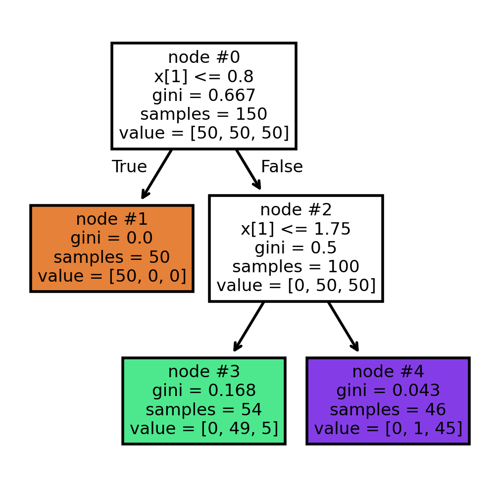
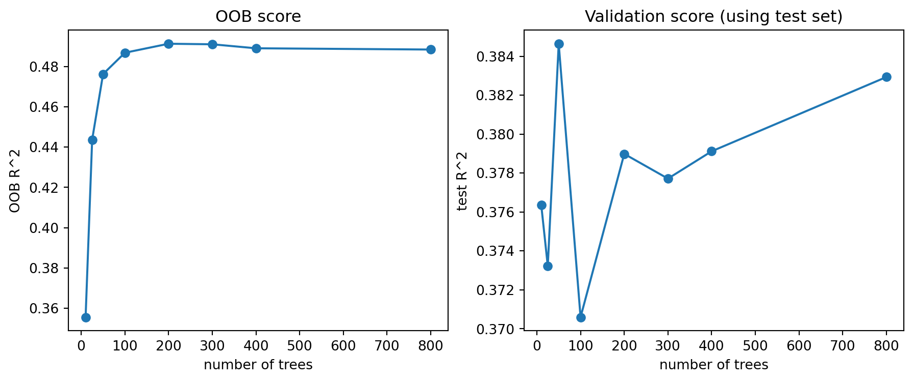
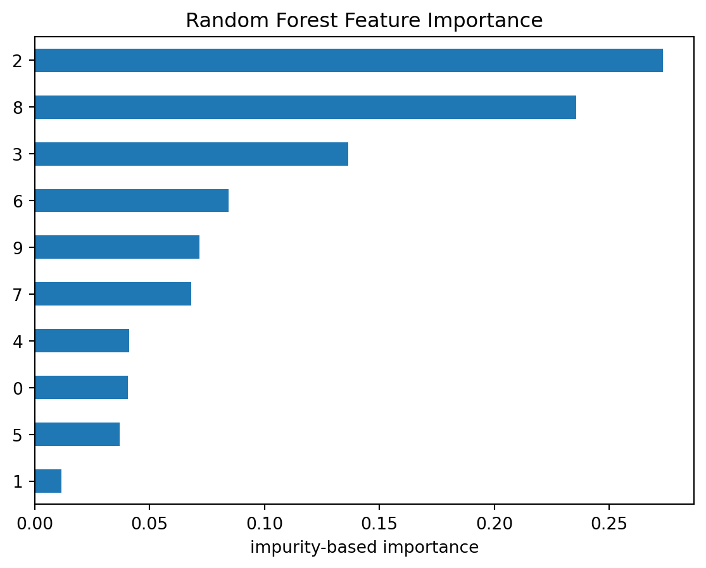
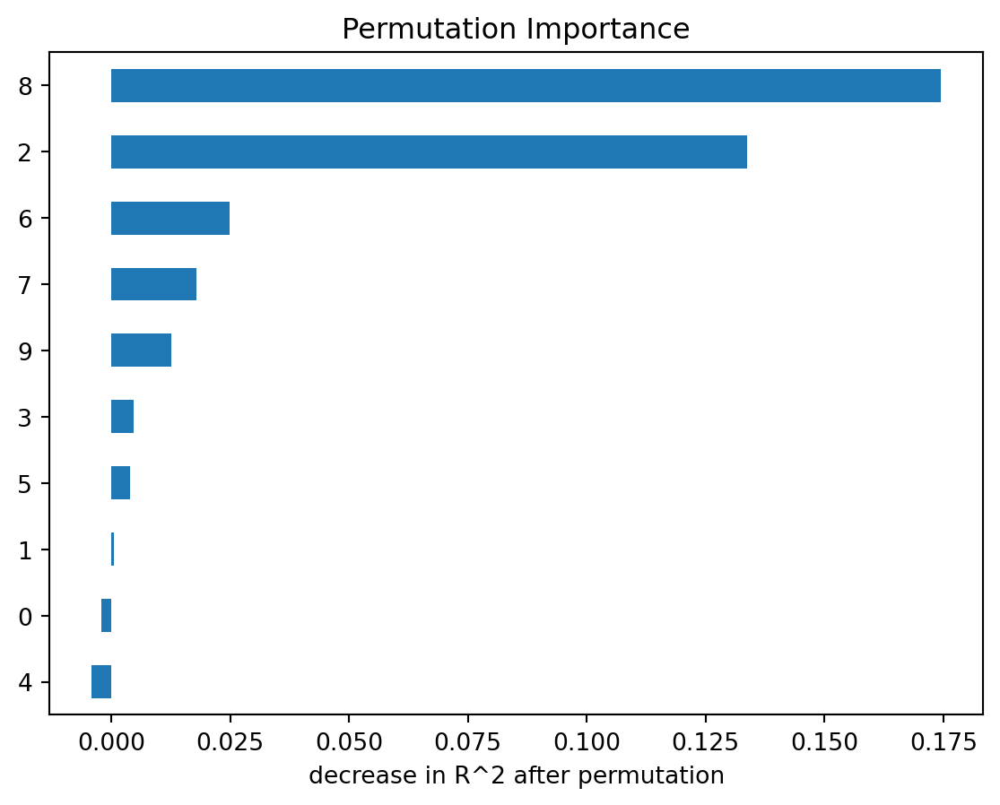

from sklearn.datasets import make_classification
from sklearn.model_selection import train_test_split
X, y = make_classification(
n_samples=1200,
n_features=10,
n_informative=3,
n_redundant=2,
n_repeated=0,
n_clusters_per_class=3,
flip_y=0.03,
random_state=1,
)
X_train, X_test, y_train, y_test = train_test_split(
X, y, test_size=0.3, random_state=1, stratify=y
)10 Bagging and Random Forests
In earlier chapters we studied single decision trees. A tree is flexible because it can capture nonlinear relationships and interactions without specifying them in advance. However, a single tree is also unstable. A small change in the training data may produce a very different tree, especially when the tree is grown deeply.
Bagging and random forests are ensemble methods designed to reduce this instability.
The central idea is:
Instead of trusting one unstable tree, build many unstable trees and average them.
This chapter first discusses bagging. Random forests will then be introduced as an improvement of bagging. Since bagging and random forests use almost the same aggregation idea for regression and classification, we will mainly use regression notation. For classification, averages are usually replaced by majority vote or averaged class probabilities.
10.1 Ensemble Averaging
Suppose we observe training data
\[ \{(x_i,y_i)\}_{i=1}^n, \quad x_i\in\mathbb R^p, \quad y_i\in\mathbb R. \]
An ensemble combines many fitted models
\[ \hat f_1,\hat f_2,\ldots,\hat f_B \]
into one final predictor. For regression, the simplest ensemble average is
\[ \hat f_{\text{ens}}(x) = \frac1B\sum_{b=1}^B \hat f_b(x). \]
Each individual model may be noisy. However, the average can be much more stable.
To see why, suppose each \(\hat f_b(x)\) has variance \(\sigma^2\), and suppose for a moment that the fitted models are independent. Then
\[ \Var\left( \frac1B\sum_{b=1}^B \hat f_b(x) \right) = \frac{\sigma^2}{B}. \]
Thus averaging can greatly reduce variance.
In practice, the fitted models are not independent. If the pairwise correlation between two fitted models is approximately \(\rho\), then
Click to expand.
\[ \cor(\hat f_i(x),\hat f_j(x))\approx \rho, \qquad i\ne j. \]
Then
\[ \Cov(\hat f_i(x),\hat f_j(x)) = \cor(\hat f_i(x),\hat f_j(x)) \sqrt{\Var(\hat f_i(x))\Var(\hat f_j(x))} \approx \rho\sigma^2. \]
Therefore,
\[ \begin{aligned} \Var\left( \frac1B\sum_{b=1}^B \hat f_b(x) \right) &= \frac1{B^2} \left[ \sum_{b=1}^B \Var(\hat f_b(x)) + \sum_{i\ne j}\Cov(\hat f_i(x),\hat f_j(x)) \right] \\[4pt] &\approx \frac1{B^2} \left[ B\sigma^2 + B(B-1)\rho\sigma^2 \right] \\[4pt] &= \sigma^2 \left[ \frac1B+\frac{B-1}{B}\rho \right] \\[4pt] &= \rho\sigma^2+\frac{1-\rho}{B}\sigma^2. \end{aligned} \]
Then
\[ \Var\left( \frac1B\sum_{b=1}^B \hat f_b(x) \right) \approx \rho\sigma^2 + \frac{1-\rho}{B}\sigma^2. \]
This formula is very important. Increasing \(B\) reduces the second term, but the first term remains. Therefore, if the individual trees are highly correlated, averaging has limited benefit.
10.2 Bagging
Bagging is short for bootstrap aggregation.
Assume the original training set has \(n\) data. A bootstrap sample is a sample drawn from the original training data with replacement. Each bootstrap sample has size \(n\), but because sampling is done with replacement, some observations appear more than once and some observations do not appear at all.
Let \(Z=\{(x_1,y_1),\ldots,(x_n,y_n)\}\) be the original training set. Bagging constructs bootstrap samples \(Z^{*1},Z^{*2},\ldots,Z^{*B}\). For each bootstrap sample \(Z^{*b}\), we fit a model \(\hat f_b(x)\). The bagged regression estimate is then
\[ \hat f_{\text{bag}}(x) = \frac1B\sum_{b=1}^B \hat f_b(x). \]
For classification, the final prediction is usually based on majority vote:
\[ \hat G_{\text{bag}}(x) = \Mode\{\hat G_1(x),\ldots,\hat G_B(x)\}. \]
Equivalently, we may average estimated class probabilities and choose the class with the largest average probability.
NoteBias-variance view
Bagging is useful when the base learner is unstable. A decision tree is a typical unstable learner. Different bootstrap samples lead to different trees, because each tree sees a slightly different version of the data.
For a decision tree, bagging usually uses large trees rather than heavily pruned trees. The reason is that a large tree has low bias but high variance. Bagging is designed to reduce variance, so it is natural to start with a flexible base learner.
A single deep tree usually has low bias and high variance. Bagging keeps the low bias and reduces the variance by averaging many deep trees.
CautionBagging estimators
Although bagging is most commonly applied to decision trees, it can also be used with other types of models.
10.2.1 Out-of-Bag Error
Although a bootstrap sample has size \(n\), it does not contain all \(n\) observations.
Definition 10.1 (Out-of-bag observations) Each bootstrap sample contains about \(63.2\%\) of the original observations as distinct observations. The remaining observations are called out-of-bag (OOB) observations for that bootstrap sample.
Click to expand.
For a fixed observation \(i\), the probability that it is not selected in one draw is
\[ 1-\frac1n. \]
The probability that it is never selected in \(n\) draws is
\[ \left(1-\frac1n\right)^n. \]
When \(n\) is large,
\[ \left(1-\frac1n\right)^n \to e^{-1} \approx 0.368. \]
Therefore, the probability that observation \(i\) appears at least once is approximately
\[ 1-e^{-1} \approx 0.632, \] and it is the expected proportion of distinct observations in a sample.
The OOB observations give a natural way to estimate prediction error.
For observation \(i\), consider only the trees for which observation \(i\) was out-of-bag. Average those trees to get an OOB prediction:
\[ \hat f_{\text{OOB},i} = \frac{1}{|B_i|} \sum_{b\in B_i}\hat f_b(x_i), \]
where \(B_i\) is the set of trees that did not use observation \(i\) in their bootstrap sample.
The OOB mean squared error is
\[ \operatorname{MSE}_{\text{OOB}} = \frac1n \sum_{i=1}^n \left(y_i-\hat f_{\text{OOB},i}\right)^2. \]
All other metrics have OOB versions in the straightforward way.
OOB error is useful because it behaves like an internal validation estimate. We do not need to set aside a separate validation set just to estimate the error of the bagged model. Therefore, for bagging, in addition to single-split validation and cross-validation, we can also use OOB validation to tune hyperparameters.
10.3 Random Forests
Random forests are a modification of bagging for decision trees. In addition to the diversity by sampling observations from Bagging, Random forests create additional diversity by sampling features during tree construction.
The random forest algorithm for regression is:
- Draw a bootstrap sample from the training data.
- Grow a large regression tree on this bootstrap sample.
- At each split, randomly choose \(m\) predictors from the full set of \(p\) predictors.
- Find the best split only among those \(m\) predictors.
- Repeat this process for \(B\) trees.
- Average the predictions.
The final random forest regressor is
\[ \hat f_{\text{RF}}(x) = \frac1B\sum_{b=1}^B\hat f_b(x). \]
The formula looks the same as bagging. The difference is how the trees are grown.
The key difference from Bagging(Trees) is the Step 3 and 4. In ordinary bagging, all predictors are available at every split. If there is one very strong predictor, many trees may split on that same predictor near the top of the tree. As a result, the trees become similar.
Similar trees are highly correlated. From the variance formula,
\[ \rho\sigma^2 + \frac{1-\rho}{B}\sigma^2, \]
we know that high correlation limits the benefit of averaging.
Now random forests reduce this issue by forcing each split to consider only a random subset of predictors. This prevents the strongest predictors from dominating every tree. The trees become less correlated, and averaging becomes more effective.
10.3.1 max_features
How many predictors are considered at each split? In sklearn, this is controlled by max_features. This is a very important hyperparameter because it affects the correlations between trees.
Large max_features means each tree can choose from many predictors. Individual trees may become stronger, but the trees may also become more similar to each other.
Small max_features forces trees to explore different predictors. This usually decreases the correlations between trees, but each individual tree may become weaker.
Thus max_features controls an important tradeoff between tree strength and tree correlation.
Common traditional choices are:
- for classification,
max_features\(=\sqrt p\) - for regression,
max_features\(=p/3\)
These recommendations originated from the original Random Forest literature [1] and later became popular defaults in many software implementations [2]. They are mainly based on empirical experience and the general intuition that:
- classification forests often benefit more from tree diversity
- regression forests often benefit more from stronger individual trees
In modern practice, however, max_features is usually treated as a tuning hyperparameter and is commonly selected using validation or cross-validation.
10.3.2 Random Forest as Adaptive Local Averaging
A random forest can also be viewed as a data-adaptive local averaging method.
For one tree, two points are close if they fall in the same terminal node. Let
\[ I_b(x,x_i) = \begin{cases}1,&\text{ if $x$ and $x_i$ are in the same leaf of tree $b$},\\ 0,&\text{ otherwise}. \end{cases} \]
Across the whole forest, define the similarity
\[ K_{\text{RF}}(x,x_i) = \frac{1}{B}\sum_{b=1}^B I_b(x,x_i). \]
This measures the proportion of trees in which \(x\) and \(x_i\) fall into the same terminal node. The quantity \(K_{\text{RF}}(x,x_i)\) can be interpreted as a data-adaptive similarity measure between \(x\) and \(x_i\).
The random forest prediction can be written as a weighted average
\[ \hat f_{\text{RF}}(x) = \sum_{i=1}^n w_i(x)y_i, \]
where observations that frequently share terminal nodes with \(x\) receive larger weights.
More details about the adaptive nearest-neighbor interpretation of random forests can be found in [3] and [2].
Note
The adaptive-neighbor interpretation helps explain why random forests often perform much better than classical distance-based methods such as KNN in complex datasets.
In KNN, neighborhoods are determined by a fixed geometric distance. In contrast, random forests learn the neighborhood structure directly from the data through recursive splitting. Two observations are considered close if the forest repeatedly places them into the same terminal nodes, so the similarity automatically adapts to the importance of variables and their relationships with the response variable.
As a result, the neighborhood automatically adapts to:
- important variables
- interaction effects
- nonlinear structures
- local heterogeneity of the feature space
This viewpoint also provides intuition for why random forests are often robust in high-dimensional settings. Instead of relying on a global distance metric, the forest constructs many local data-dependent neighborhoods and averages over them.
From a theoretical perspective, this interpretation connects random forests to classical nonparametric smoothing methods such as KNN and kernel regression, helping explain random forests using the broader language of statistical learning theory.
10.3.3 Feature Importance
There are two commonly used measures of feature importance. We briefly discuss them here. More detailed examples and implementations can be found in the scikit-learn documentation.
10.3.3.1 Mean Decrease in Impurity
One common measure is impurity-based importance, also called Mean Decrease in Impurity (MDI). This importance measure is specific to tree-based methods because it depends directly on the tree splitting process.
Recall that when building a tree, each split is selected to reduce a splitting impurity (or loss), such as:
- squared error for regression
- Gini impurity for classification
Impurity-based importance measures how much a variable decreases the splitting impurity across all splits in all trees. Variables that frequently produce large impurity reductions receive larger importance values.
For a single tree, the feature importance is simply the total impurity reduction contributed by that variable across all splits in the tree. However, because a single decision tree is often unstable and has high variance, these importance values may vary substantially from one tree to another. In bagging and Random Forests, the importance values are averaged across many trees, producing a much more stable and reliable measure of variable importance.
10.3.3.2 Permutation importance
Another common measure is permutation importance. Unlike impurity-based importance, permutation importance is a general model-agnostic method and is not specific to trees or Random Forests.
The basic idea is:
- Measure prediction error on validation data.
- Randomly permute one predictor.
- Measure prediction error again.
Permuting a predictor destroys the relationship between that predictor and the response while keeping the marginal distribution unchanged. If permuting a predictor substantially worsens predictive performance, then the model strongly relies on that predictor, indicating high importance.
Permutation importance is often easier to interpret because it is directly tied to predictive performance rather than the internal structure of the model.
NoteMDI vs Permutation Importance
The two methods answer different questions:
- MDI explains how much the model used a variable during training.
- Permutation importance measures how much the model depends on that variable for prediction.
In general, if the main goal is to understand predictive performance and generalization, permutation importance is usually more relevant. However, MDI is much faster to compute because it is obtained directly during training. This advantage becomes especially important when the dataset contains many features or when the model is very large.
In many practical situations, MDI and permutation importance may produce similar rankings of variables. In addition, MDI can also help us investigate the internal structure of the model by showing how frequently and how effectively variables are used for splitting.
WarningLimitations of MDI
Continuous predictors, predictors with many possible split points, or high-cardinality categorical variables may have more opportunities to create impurity reductions during splitting. Therefore, MDI may favor these variables.
WarningLimitations of Permutation Importance
When there are redundant features or highly correlated predictors, permuting one variable may not substantially reduce predictive performance because other correlated variables can still provide similar information. As a result, permutation importance may underestimate the importance of correlated predictors.
10.4 Different Types of Randomization in Tree Ensembles
One of the main ideas behind ensemble tree methods is to introduce randomness in order to reduce variance. However, there are many different ways to introduce randomness. Different methods randomize different parts of the tree-building process.
The general tradeoff is:
- more randomness usually decreases variance
- but too much randomness may increase bias
The goal is therefore to make trees different while still keeping each tree reasonably strong.
10.4.1 (Almost) No randomness: Single Decision Tree
A standard CART tree contains almost no randomness.
At each node:
- all predictors are considered
- all candidate split points are searched
- the best split is selected greedily
As a result:
- trees are highly adaptive
- trees usually have low bias
- but trees often have very high variance
Small changes in the training data may completely change the structure of the tree.
In reality, there is still a small amount of randomness in CART. For example, when multiple features produce identical impurity reductions, the algorithm may randomly choose among them.
In practice, in sklearn, this is implemented partly by randomizing the order of features. The random_state parameter controls this randomness.
10.4.2 Bootstrap Randomness: Bagging
Bagging introduces randomness through bootstrap resampling.
For each tree:
- sample observations with replacement
- grow a large tree using the bootstrap sample
- aggregate all trees together
The splitting procedure itself is unchanged:
- all predictors are still considered
- the best split is still searched greedily
Therefore, bagging mainly creates diversity by changing the training data seen by each tree.
The individual trees are still strong learners, but averaging reduces variance.
10.4.3 Feature Randomness: Random Forest
Random Forest adds another layer of randomness. At each split:
- randomly select a subset of predictors
- search for the best split only among those predictors
This has several important effects:
- strong predictors cannot dominate every split
- trees become less correlated
- averaging becomes more effective
However, the split threshold is still optimized greedily. For a chosen predictor, Random Forest still searches all candidate split points.
A natural question is why not randomly choose a subset of predictors once for the entire tree. The reason is that this would usually create trees that are too weak.
Suppose an important predictor is excluded at the beginning. Then the entire tree loses access to that predictor forever.
Random Forest instead performs randomization locally:
- each node receives a new random subset of predictors
- important predictors still have many opportunities to appear
- trees remain reasonably strong
This creates a balance between tree strength and tree diversity.
10.4.4 Threshold Randomness: Extra Trees
Extra Trees (Extremely Randomized Trees) introduces even more randomness. At each split:
- randomly choose a subset of predictors (similar to Random Forest)
- randomly generate candidate split thresholds, typically one threshold for each selected predictor
- select the best split among those randomly generated thresholds
Unlike Random Forest:
- the algorithm does not exhaustively search all candidate split points
- the split thresholds themselves are randomized
This additional randomness usually:
- further decreases correlation between trees
- further reduces variance
- slightly increases bias
10.5 Bagging in Python
We now discuss implementation details in sklearn.
There are two main approaches.
- Use
BaggingRegressororBaggingClassifierwith a chosen base estimator. - Use
RandomForestRegressororRandomForestClassifierwhen the base estimator is a decision tree and we also want random feature selection.
In the intial demo, we will only talk about Classifier since it is very similar to Regressor. We will use the following generated dataset as the demo example.
10.5.1 Basic Bagging classifier
The following code creates a bagged ensemble of regression trees.
from sklearn.ensemble import BaggingClassifier
from sklearn.tree import DecisionTreeClassifier
bag = BaggingClassifier(
estimator=DecisionTreeClassifier(random_state=0),
n_estimators=300,
max_samples=1.0,
bootstrap=True,
oob_score=True,
random_state=0,
)The important arguments are:
estimator: the base model. For classical tree bagging, this is a decision tree.n_estimators: the number of bootstrap models.max_samples: the sample size used for each bootstrap sample.bootstrap: whether sampling is done with replacement.Truegives bagging;Falsegives pasting.oob_score: whether to compute out-of-bag performance.
After creating the model, we use the same .fit() and .predict() and .score() workflow as before.
bag.fit(X_train, y_train)
bag.score(X_test, y_test)0.913888888888888910.5.2 Random Forest Classifier
A random forest classifier is similar, but the random feature selection is built in.
from sklearn.ensemble import RandomForestClassifier
rf = RandomForestClassifier(
n_estimators=300,
max_features=1.0,
bootstrap=True,
oob_score=True,
random_state=0
)
rf.fit(X_train, y_train)
rf.score(X_test, y_test)0.9138888888888889The most important additional argument is max_features.
For example:
RandomForestClassifier(max_features=1.0)
RandomForestClassifier(max_features="sqrt")
RandomForestClassifier(max_features=0.5)1.0: consider all predictors at each split. In this case, it is reduced to aBaggingRegressor."sqrt": consider about \(\sqrt p\) predictors at each split.0.5: consider half of the predictors at each split.
When max_features=1.0, a random forest regressor is very close to bagging with decision trees. When max_features is smaller, the trees become more decorrelated.
10.5.3 Useful Attributes
After fitting a bagging or random forest model, several attributes are useful. This example shows random forest, but bagging also supports these attributes.
.estimators_stores the fitted trees, and we could indicate which tree we want to use by calling the index.
rf.estimators_[0]DecisionTreeClassifier(max_features=1.0, random_state=209652396)In a Jupyter environment, please rerun this cell to show the HTML representation or trust the notebook.
On GitHub, the HTML representation is unable to render, please try loading this page with nbviewer.org.
Parameters
.oob_score_gives the OOB score ifoob_score=True. For classification,bag.oob_score_is the OOB accuracy. For regression, it is the OOB \(R^2\) score.
rf.oob_score_0.88809523809523810.5.3.1 Feature importance
MDI can be directly computated using .feature_importances_ after the model is fitted.
rf.feature_importances_array([0.02767912, 0.05947287, 0.11152095, 0.02443874, 0.02509798,
0.25352125, 0.02526593, 0.03385812, 0.26526717, 0.17387786])For permutation importance, we use permutation_importance from sklearn.inspection.
from sklearn.inspection import permutation_importance
pi = permutation_importance(rf, X_test, y_test, n_repeats=30, random_state=1)
pi.importances_meanarray([-5.27777778e-03, 1.12037037e-02, 8.38888889e-02, 9.25925926e-05,
4.62962963e-04, 1.86111111e-01, -1.20370370e-03, 2.96296296e-03,
2.05000000e-01, 9.92592593e-02])In this example you may see that the two are very similar to each other.
Code
import pandas as pd
import matplotlib.pyplot as plt
importance_df = pd.DataFrame(
{"MDI": rf.feature_importances_, "Permutation": pi.importances_mean}
)
importance_df.plot.barh(figsize=(8, 5))
plt.xlabel("importance")
plt.title("Feature Importance Comparison")Text(0.5, 1.0, 'Feature Importance Comparison')
10.6 Tuning Hyperparameters
Bagging and random forests are usually easier to tune than boosting. Still, several parameters matter.
| Parameter | Main effect |
|---|---|
n_estimators |
More trees reduce Monte Carlo variation, but increase computation. |
max_features |
Controls tree correlation. Smaller values create more randomness. |
max_samples |
Controls bootstrap sample size. Smaller values create more diversity. |
min_samples_leaf |
Controls smoothness of each tree. Larger values reduce overfitting. |
max_depth |
Limits tree depth. Often left as None, but can help noisy data. |
A practical tuning strategy is:
- Choose a reasonably large
n_estimators(so it is highly possible to be stable). - Tune
max_features,min_samples_leaf,max_samplesormax_depthwith cross-validation or OOB error. - Make
n_estimatorssmaller to find the smallest stable number.
Warning
n_estimators
For bagging / random forests, n_estimators is usually not a regularization parameter in the usual sense. Increasing the number of trees usually stabilizes the model rather than causing overfitting. The main cost is computation. Therefore when reading the score vs number of trees plot, we are not looking at the highest score, we are looking at when the score is stablizing.
Warning
1 and 1.0
These two represent different things.
max_samples=1means that the max number of samples we choose is 1.max_samples=1.0means that we want to choose all samples that the percent is 1.0=100%.
Note
Comparing to single tree/boosting, we tend to use larger trees in bagging. Therefore we don’t need ccp_alpha, and we could use larger max_depth and smaller min_samples_leaf.
NoteOOB validation
We could use oob score to tune hyperparameters. However we have to manually write the tuning code.
from sklearn.ensemble import RandomForestClassifier
max_features_list = [0.3, 0.5, 0.8, 1.0]
best_score = -1
best_param = None
for mf in max_features_list:
rf = RandomForestClassifier(
n_estimators=300, max_features=mf, oob_score=True, random_state=0, n_jobs=-1
)
rf.fit(X_train, y_train)
if rf.oob_score_ > best_score:
best_score = rf.oob_score_
best_param = mf
print(best_param)0.3
NoteCross-validation
We could still use cross-validation to tune a random forest classifier.
from sklearn.model_selection import GridSearchCV
from sklearn.ensemble import RandomForestClassifier
param_grid = {
"max_features": [0.3, 0.6, 1.0],
"min_samples_leaf": [1, 3, 5],
"max_samples": [0.6, 0.8, 1.0],
}
rf = RandomForestClassifier(n_estimators=300, random_state=0)
grid = GridSearchCV(rf, param_grid=param_grid, cv=5, n_jobs=-1)
grid.fit(X_train, y_train)
best_rf = grid.best_estimator_
grid.best_params_{'max_features': 0.3, 'max_samples': 0.8, 'min_samples_leaf': 1}
NoteRandomized Search
If the dataset is large, a full grid can be slow. In that case, RandomizedSearchCV is often a better choice. In this case, only a few random combinations will be searched. In the following example, we only search 30 combinations.
from sklearn.model_selection import RandomizedSearchCV
from scipy.stats import randint, uniform
param_dist = {
"max_features": uniform(0.2, 0.8),
"min_samples_leaf": randint(1, 20),
"max_samples": uniform(0.5, 0.5),
}
rf = RandomForestClassifier(n_estimators=300, random_state=0)
search = RandomizedSearchCV(
rf, param_distributions=param_dist, n_iter=30, cv=5, random_state=0, n_jobs=-1
)
search.fit(X_train, y_train)
search.best_params_{'max_features': np.float64(0.9220787804235238),
'max_samples': np.float64(0.7249749949556138),
'min_samples_leaf': 2}10.6.1 n_jobs
When we reach this stage, you may notice that training can become quite slow. This is expected because, in GridSearchCV, we need to evaluate many combinations of hyperparameters. For each combination, we may need to train many trees (due to bagging or Random Forests), and the entire process must be repeated multiple times because of cross-validation (for example, cv=5).
Although many models need to be trained, an important advantage is that these training tasks are largely independent. Therefore, they can often be trained simultaneously using multiple CPU cores.
In contrast, boosting methods that we will discuss later are fundamentally sequential. Each tree depends on the results of the previous trees, so the trees must be trained one after another. As a result, boosting methods are generally less parallelizable at the tree level.
sklearn supports multi-core CPUs through the n_jobs argument.
n_jobs=1means single-core executionn_jobs=kuses exactlykCPU coresn_jobs=-1uses all available CPU coresn_jobs=Noneuses the library default, which is currently equivalent to1in mostsklearnfunctions
Many functions in sklearn support this argument. For details, consult the official documentation for the specific function being used.
One important practical issue is nested parallelism. When multiple nested functions both support n_jobs, it is usually best to parallelize only the outermost function.
For example, GridSearchCV(RandomForestClassifier(n_jobs=1), n_jobs=-1) is generally preferred over GridSearchCV(RandomForestClassifier(n_jobs=-1), n_jobs=-1) because allowing both levels to parallelize simultaneously may create too many worker processes or threads, leading to excessive overhead and sometimes even slower performance.
Example 10.1 (time it) We first write a helper function to compute the runtime.
from time import perf_counter
from contextlib import contextmanager
@contextmanager
def timer(name="runtime"):
start = perf_counter()
yield
end = perf_counter()
print(f"{name}: {end - start:.4f} seconds")Then use it to test the time for different n_jobs.
param_grid = {
"max_features": [0.3, 0.6, 1.0],
"min_samples_leaf": [1, 3, 5],
"max_samples": [0.6, 0.8, 1.0],
}
rf = RandomForestClassifier(n_estimators=300, random_state=0)
grid = GridSearchCV(rf, param_grid=param_grid, cv=5, n_jobs=-1)
with timer("n_jobs=-1"):
grid.fit(X_train, y_train)
grid = GridSearchCV(rf, param_grid=param_grid, cv=5, n_jobs=1)
with timer("n_jobs=1"):
grid.fit(X_train, y_train)n_jobs=-1: 21.0860 seconds
n_jobs=1: 87.1920 seconds10.7 Example: Diabetes dataset
We now use the diabetes regression dataset from sklearn. In order to compare results using trees, we use the same split with random_state=1.
import numpy as np
import pandas as pd
import matplotlib.pyplot as plt
from sklearn.datasets import load_diabetes
from sklearn.model_selection import train_test_split
from sklearn.metrics import mean_squared_error, r2_score
X, y = load_diabetes(return_X_y=True)
X_train, X_test, y_train, y_test = train_test_split(X, y, test_size=0.2, random_state=1)We compare three models:
- a single regression tree,
- bagging with regression trees,
- a random forest.
from sklearn.tree import DecisionTreeRegressor
from sklearn.ensemble import BaggingRegressor, RandomForestRegressor
tree = DecisionTreeRegressor(random_state=1, ccp_alpha=105.185)
bag = BaggingRegressor(
estimator=DecisionTreeRegressor(random_state=1),
n_estimators=300,
oob_score=True,
random_state=1,
)
rf = RandomForestRegressor(
n_estimators=300,
max_features="sqrt",
oob_score=True,
random_state=1,
)tree.fit(X_train, y_train)
tree.score(X_test, y_test)0.1922738375305083bag.fit(X_train, y_train)
bag.score(X_test, y_test)0.2951908085625511rf.fit(X_train, y_train)
rf.score(X_test, y_test)0.3555401846697034The single tree is expected to be unstable. Bagging and random forests usually improve test performance by averaging many trees.
For the bagging and random forest models, we can also check OOB performance.
bag.oob_score_0.4567923788468702rf.oob_score_0.47245609860472904OOB \(R^2\) gives an internal estimate of predictive performance based only on the training data.
10.7.1 Tuning the Random Forest
We showed Bagging in the previous section. Since it overlaps with RandomForest, we will only focus on the Random Forest model in this section. We first tune max_features, min_samples_leaf, and max_samples by cross-validation, with a relative small number of estimators.
from sklearn.model_selection import GridSearchCV
rf_base = RandomForestRegressor(n_estimators=300, random_state=1)
param_grid = {
"max_features": ["sqrt", 0.5, 1.0],
"min_samples_leaf": [1, 3, 5, 10],
"max_samples": [0.6, 0.8, 1.0],
}
grid = GridSearchCV(rf_base, param_grid=param_grid, cv=5, n_jobs=-1)
grid.fit(X_train, y_train)
print(f"Best parameters: {grid.best_params_}")
print(f"Best CV R^2: {grid.best_score_}")Best parameters: {'max_features': 'sqrt', 'max_samples': 1.0, 'min_samples_leaf': 5}
Best CV R^2: 0.45220837115313606Now evaluate the tuned model on the test set.
grid.best_estimator_.score(X_test, y_test)0.377718649948513910.7.2 Find the Number of Trees
The number of trees controls how stable the ensemble average is. The following code fits forests with different numbers of trees and records OOB performance.
tree_counts = [10, 25, 50, 100, 200, 300, 400, 800]
oob_scores = []
test_r2 = []
for n_trees in tree_counts:
model = RandomForestRegressor(
n_estimators=n_trees,
max_features="sqrt",
max_samples=1.0,
min_samples_leaf=5,
oob_score=True,
random_state=1,
n_jobs=-1,
)
model.fit(X_train, y_train)
oob_scores.append(model.oob_score_)
test_r2.append(model.score(X_test, y_test))
fig, ax = plt.subplots(1, 2, figsize=(11, 4))
ax[0].plot(tree_counts, oob_scores, marker="o")
ax[0].set_xlabel("number of trees")
ax[0].set_ylabel("OOB R^2")
ax[0].set_title("OOB score")
ax[1].plot(tree_counts, test_r2, marker="o")
ax[1].set_xlabel("number of trees")
ax[1].set_ylabel("test R^2")
ax[1].set_title("Validation score (using test set)");
As mentioned previously, when reading these two plots, it is important not to focus on the single highest point. Instead, we look for the point where the curve becomes stable and nearly flat. In this example, around 200 trees appears to be a reasonable choice.
Therefore our best model so far is
best_rf = RandomForestRegressor(
n_estimators=200,
max_features="sqrt",
max_samples=1.0,
min_samples_leaf=5,
oob_score=True,
random_state=1,
n_jobs=-1
)
best_rf.fit(X_train, y_train)RandomForestRegressor(max_features='sqrt', max_samples=1.0, min_samples_leaf=5,
n_estimators=200, n_jobs=-1, oob_score=True,
random_state=1)In a Jupyter environment, please rerun this cell to show the HTML representation or trust the notebook. On GitHub, the HTML representation is unable to render, please try loading this page with nbviewer.org.
Parameters
10.7.2.1 Variable Importance
We first examine impurity-based feature importance.
importance = pd.Series(best_rf.feature_importances_).sort_values(ascending=True)
importance.plot(kind="barh")
plt.xlabel("impurity-based importance")
plt.title("Random Forest Feature Importance")Text(0.5, 1.0, 'Random Forest Feature Importance')
These values measure how much each variable reduces prediction error inside the trees. They are useful for a quick summary, but they should not be treated as causal effects.
Permutation importance gives a more direct performance-based measure.
from sklearn.inspection import permutation_importance
perm = permutation_importance(
best_rf, X_test, y_test, n_repeats=30, random_state=1, n_jobs=-1
)
perm_importance = pd.Series(perm.importances_mean).sort_values(ascending=True)
perm_importance.plot(kind="barh")
plt.xlabel("decrease in R^2 after permutation")
plt.title("Permutation Importance")Text(0.5, 1.0, 'Permutation Importance')
If permuting a predictor substantially worsens predictions, then the fitted random forest relies on that predictor. If the importance is near zero, the predictor may not add much predictive information beyond the others.
From the two plots, feature 2 and 8 are the two most important features. If we go back to check the description of the dataset, they are bmi: body mass index and s5: ltg, possibly log of serum triglycerides level.